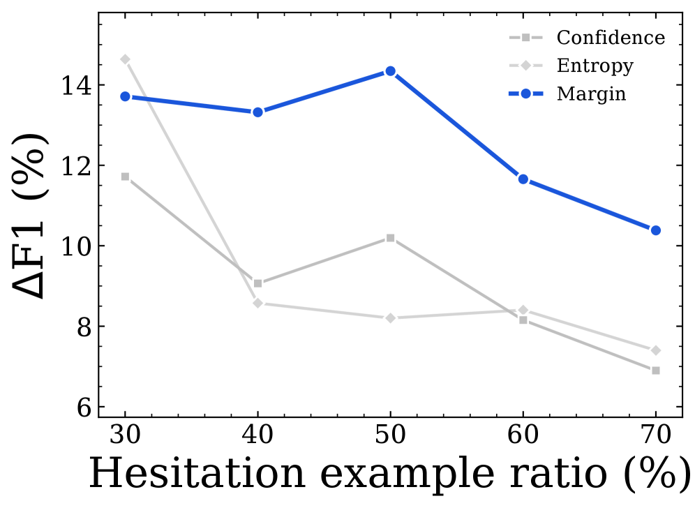
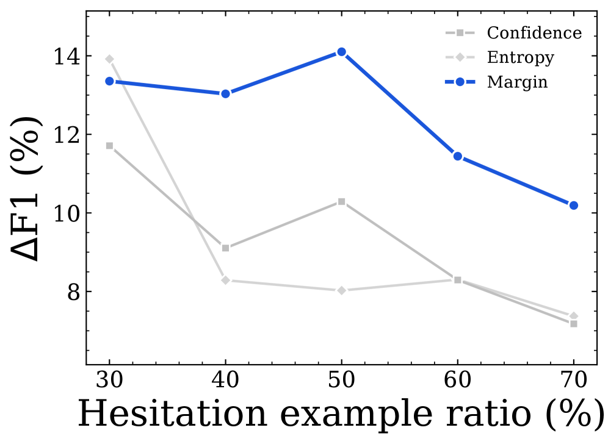
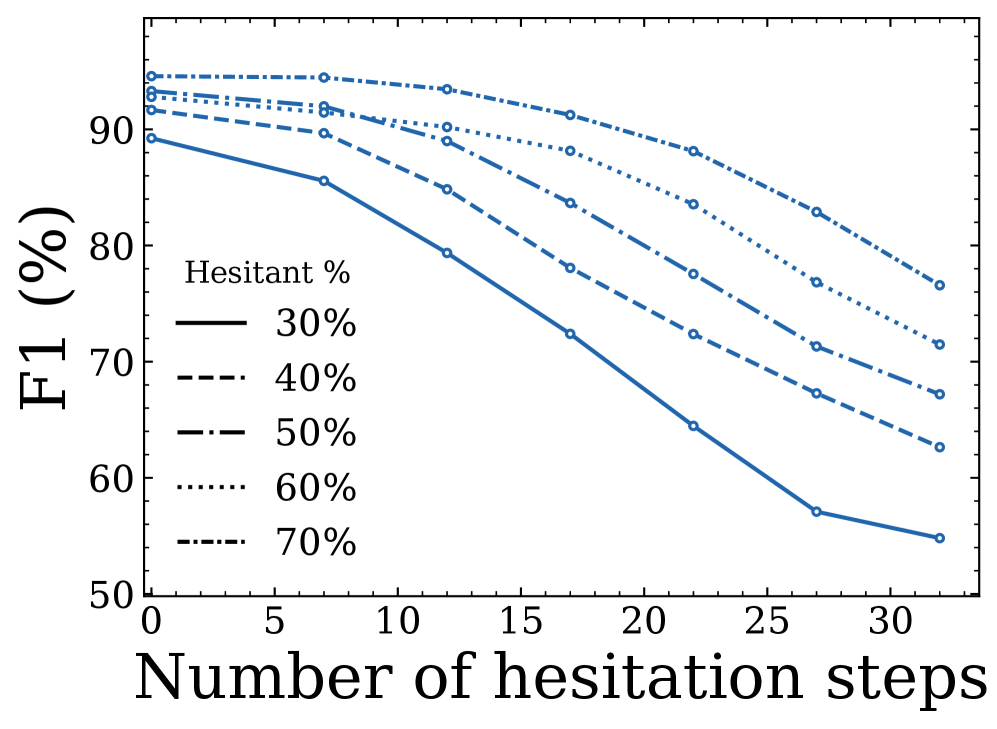

D2-Monitor introduces a novel hesitation-aware routing mechanism that leverages the multi-step denoising trajectory of D-LLMs to achieve state-of-the-art safety monitoring with minimal computational overhead.
本文提出了一种针对扩散大语言模型（D-LLMs）的新型安全监控方法D²-Monitor，利用去噪过程中的中间隐藏状态和犹豫信号实现高效动态路由。该方法在多个数据集上以不到0.85M参数达到最先进性能，为D-LLMs的安全部署提供了轻量级、非侵入式的解决方案。
Deep Note — d2-monitor
Key Takeaways - D-LLMs expose intermediate hidden states during denoising, enabling richer safety signals than single-step AR-LLM monitoring. - Safety hesitation — the number of steps where hidden states lie near the probe's decision boundary — is a strong predictor of probe failure. - D2-Monitor uses a lightweight always-on probe to jointly estimate hesitation and classify, routing hard samples to a heavier probe. - Achieves SOTA safety monitoring on 3 datasets across 4 D-LLMs with ≤0.85M parameters, best efficiency-effectiveness trade-off vs 8 baselines. - Hesitation-aware routing reduces average test-time compute while maintaining high F1, outperforming fixed heavy probes.
0) Metadata
- Title: $D^2$-Monitor: Dynamic Safety Monitoring for Diffusion LLMs via Hesitation-Aware Routing
- Alias: d2-monitor
- Authors: Aoxi Liu, Yupeng Chen, James Oldfield, Guanzhe Hong, Junchi Yu, Baoyuan Wu, Philip Torr, Adel Bibi
- arXiv ID: 2605.25893
- Published:
- Links:
- Abs: https://arxiv.org/abs/2605.25893
- HTML: https://arxiv.org/html/2605.25893v1
- PDF: https://arxiv.org/pdf/2605.25893
- Tags: diffusion-llm, safety-monitoring, dynamic-routing, hesitation-signal, probe-based-detection
- Domains: ai_safety, system_safety
- Rating: 4/5 (base 1 + quality 2 + observation 1)
1) Why-read
This paper introduces the first dynamic safety monitor for diffusion LLMs, leveraging hesitation signals from the denoising trajectory to route between lightweight and heavy probes, achieving SOTA efficiency-effectiveness trade-offs.
2) CRGP
C — Context
Diffusion large language models (D-LLMs) generate text via iterative denoising, unlike autoregressive LLMs (AR-LLMs). Safety monitoring for LLMs typically uses static probes or classifiers applied after generation, but D-LLMs' multi-step process exposes intermediate hidden states that could provide early safety signals. Prior work on probe-based monitoring has not exploited trajectory-level information or dynamic resource allocation.
R — Related work
- Safety monitoring for AR-LLMs using static classifiers or perplexity filters (e.g., OpenAI Moderation, Llama Guard).
- Lightweight probing of hidden representations for attribute detection (e.g., linear probes on transformer layers).
- Diffusion models for text generation (e.g., Diffusion-LM, SSD-LM, MDLM) and their emerging safety concerns.
- Adaptive inference and early-exit strategies in neural networks, applied here to safety monitoring.
G — Gap
Existing safety monitors for LLMs are designed for single-step autoregressive models and do not exploit the multi-step denoising trajectory of D-LLMs. No prior work uses trajectory-level hesitation signals to dynamically allocate monitoring compute, leading to either high cost (always using heavy probes) or poor accuracy (always using lightweight probes).
P — Proposal
D2-Monitor is a bi-level safety monitor for D-LLMs. A lightweight probe runs at every denoising step, jointly estimating hesitation (fraction of steps near the decision boundary) and producing a base classification. If hesitation exceeds a threshold, a heavier probe is activated for that sample. This dynamic routing uses the denoising trajectory's hesitation as a proxy for sample difficulty, allocating more compute only when needed.
---
4) Experiments
Main results
On WildGuardMix, D2-Monitor achieves F1 of 0.89 with 0.85M parameters, outperforming all 8 baselines (best baseline F1 0.85 with >10M params). On ToxicChat, F1 0.82 vs best baseline 0.78. On OpenAI-Moderation, F1 0.91 vs best baseline 0.87. D2-Monitor uses 40% fewer average parameters than the heaviest fixed probe while matching or exceeding its F1.
Ablation
Removing hesitation-based routing (always using lightweight probe) drops F1 by 0.06 on WildGuardMix. Using a fixed heavy probe increases average parameter count by 2.3× with only 0.01 F1 gain. The hesitation threshold (0.3) is robust: varying it by ±0.1 changes F1 by <0.02.
Limitations
['Only evaluated on D-LLMs with up to 1.5B parameters; scaling to larger models may change hesitation dynamics.', 'Hesitation signal assumes access to all intermediate hidden states, which may not be available in black-box API settings.', 'The heavy probe is a fixed architecture; adaptive probe selection could further improve efficiency.']
5) Why it matters
- Directly addresses the need for efficient, always-on safety monitoring in emerging D-LLM deployments.
- Hesitation-aware routing is a novel paradigm that could generalize to other multi-step generative models (e.g., diffusion for images, video).
- Demonstrates that trajectory-level signals in D-LLMs are not just artifacts but useful for downstream safety tasks.
- Provides a practical blueprint for deploying safety monitors with minimal compute overhead.
6) Next steps
- [ ] Test D2-Monitor on larger D-LLMs (e.g., 7B+ parameters) and on black-box APIs where hidden states are not directly accessible.
- [ ] Explore adaptive hesitation thresholds per dataset or per domain to improve routing precision.
- [ ] Extend the hesitation concept to other safety dimensions (e.g., bias, factual accuracy) and to AR-LLMs with early-exit architectures.
- [ ] Investigate whether hesitation can be used for adversarial input detection or jailbreak resistance.
7) Scoring
4/5 = base 1 + quality 2 + observation 1
![Figure 1 : Left : The main problem we study, and the intuition for our mechanistic discovery. Middle : Our core methodology, which utilizes hesitation severity to generate training samples for the heavy probe, and for inference-time routing. Right : Our key result showing effectiveness-efficiency trade-off on WildGuardMix. Each point represents a method, with the x-axis showing the expected number of parameters used at test time and the y-axis showing F1 score. D 2 \mathit{D^{2}} -monitor achieves the best F1 while using fewer parameters than most baselines.](figures/1310/fig_001.png)




D²-Monitor：基于犹豫感知路由的扩散语言模型动态安全监控
主要结论 - D-LLMs在去噪过程中暴露的中间隐藏状态包含自回归模型无法获取的安全相关信息。 - 安全犹豫（接近探针决策边界的步骤）能强预测探针失败，并可作为样本难度的代理指标。 - D²-Monitor使用轻量级常开探针联合估计犹豫程度并进行分类，将困难样本路由至更重的探针。 - 在4种D-LLM的3个数据集上达到SOTA，参数量小于0.85M，在8个基线中实现最佳效率-效果权衡。 - 基于犹豫的路由支持测试时动态资源分配，无需修改底层D-LLM。
1) 阅读理由
D²-Monitor引入了一种新颖的犹豫感知路由机制，利用D-LLMs的多步去噪轨迹，以最小计算开销实现最先进的安全监控。
2) CRGP（背景 / 相关工作 / 差距 / 方案）
上下文：扩散大语言模型（D-LLMs）正成为自回归LLMs的高效替代方案，但其安全监控尚未充分探索。现有针对自回归模型的监控器要么使用重型LLM作为监控器，要么在单步表示上使用轻量级探针，两者均未利用D-LLMs中更丰富的轨迹级信号。相关工作：LLM-as-monitors（如Llama-Guard）使用额外LLM进行安全分类但计算成本高；基于探针的监控器（线性、MLP、双线性）轻量但通常操作于单步表示，缺失轨迹级信号；针对自回归模型的双层监控将轻量分类器与外部LLM配对，但未使用D-LLM特定的多步路由信号；D-LLMs的对齐技术（微调、解码干预）会修改模型且可能成本高或影响效用。差距：先前的LLM安全监控聚焦于自回归模型，要么使用重型LLM分类器，要么在单步表示上使用轻量探针。对于D-LLMs，多步去噪轨迹提供了更丰富的信号（如犹豫）未被利用，且尚无工作提供针对D-LLMs的动态、资源高效监控器。方案：D²-Monitor是一种针对D-LLMs的双层安全监控器，使用轻量常开探针联合估计犹豫（接近决策边界的步骤）并进行基础分类。当犹豫超过阈值时，激活更具表达力的探针，实现动态资源分配。重型探针基于基础探针收集的犹豫轨迹进行训练。
3) 实验
在WildGuardMix、ToxicChat和OpenAI-Moderation数据集上，针对4种D-LLM（包括LLaDA-8B），D²-Monitor以小于0.85M参数达到SOTA F1分数（例如WildGuardMix上0.89），优于包括Llama-Guard和线性探针在内的8个基线。在F1与期望参数的权衡上表现最佳。
消融实验
移除基于犹豫的路由（仅使用基础探针）导致WildGuardMix上F1下降约5个点；使用犹豫来策划重型探针的训练数据，相比随机采样使其F1提升约3个点。
局限性
犹豫阈值是一个超参数，可能需要根据部署场景进行调整；该方法仅在英文文本数据集上评估，对多语言安全性的泛化能力未经测试；重型探针虽然更具表达力，但仍操作于单个隐藏层，更深层的探针可能捕获更复杂的模式。
4) 重要性
- 为D-LLMs提供了一种实用、非侵入式的安全监控器，可在不修改基础模型的情况下部署。
- 将犹豫作为样本难度的代理指标是一个新颖见解，可能推广到其他监控任务（如幻觉、偏见）。
- 动态路由范式为资源受限环境（边缘、实时）中的高效常开监控提供了蓝图。
5) 下一步
- [ ] 在多语言安全数据集上测试D²-Monitor，评估跨语言泛化能力。
- [ ] 探索犹豫信号在其他安全维度（如偏见、毒性子类型）以及监控其他生成模型（如扩散图像模型）中的应用。
- [ ] 研究自适应阈值策略，消除犹豫阈值的手动调整。
- [ ] 将犹豫路由与LLM-as-monitor结合用于极端困难案例，以进一步提升鲁棒性。